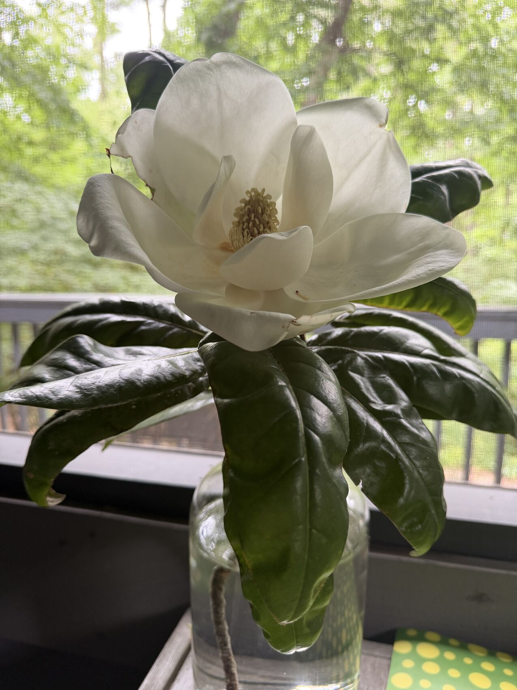

Cantharophily · beetle-love
Cantharophily
for a magnolia in a jar of tap water.
I
The Bowl
It sits beside me in its glass of nothing,and it will not stop speaking.Not to me. I lean in like a fool at a shrine,but the broadcast was never tuned to my receiver.The scent is older than the noses worth the name,a signal flung into a forest that has forgottenhow to answer in the original tongue.
Six tepals, then six more — tepals, not petals,for this flower predates the committeethat voted to split sepal from petal,to assign each whorl its job. Here is older governance:everything the same pale flag, spiraled,a cone that learned to open and call itself a bloom.A flower that remembers being a cone.
And at the center, the green-gold strobilus,the gynoecium stacked like a fir cone's ghost,the laminar stamens flattened to little blades —no neat filaments, no engineered economy of pollen.This is a Cretaceous draft. It still is the version in production.
II
Before the Bee
Understand the timing, because the timing is the whole poem.
When this architecture was drawn — a hundred million years ago,under a sky that held pterosaurs the way ours holds satellites —the bee did not exist.The bee was a rumor in the future of wasps.
So the flower could not advertise to the precise,the hovering accountants of nectar, the colony's auditors.It had to call the only courier already on the roadfor two hundred million years before the angiosperms woke up:the beetle. Carapaced. Permian. Older than the dinosaursthat browsed beside it, older than grass, older than the idea of a flower.
You want deep time? The flower is the parvenu.The beetle is the aristocrat it had to flatter.
III
The Trap, Which Is Also a Gift
So it built a bowl a beetle could believe in.Big enough to be seen by a brain the size of a pinhead.Pale enough to glow at dusk like a lamp left on.And warm — here is the marvel — warm:the flower burns its own sugars in the mitochondria of its tissue,thermogenesis, a fever with no infection,heating the chamber to volatilize the perfume,to make the bowl a sauna the cold-blooded cannot refuse.
The beetle climbs in. Of course it does.Heat, scent, pollen to eat, soft tissue to chew,a humid theater to find a mate in —total beetle hedonism, every reward circuit lit.
And while it wallows, the flower runs its oldest trick:protogyny. The stigmas ripen first, receptive,hungry for yesterday's pollen on yesterday's beetle.Only later, hours later, do the stamens loose their dust.The bowl half-closes overnight. The beetle is a guestwho does not know he is also the post.He leaves at dawn dusted gold, carrying the futureto the next lamp burning in the dark.
No bargain was struck. The beetle was never asked.The flower simply learned the shape of his wantingand built itself to fit.
IV
The Chemistry of the Lie That Isn't a Lie
What is the perfume, exactly? Pull it apart:linalool, the soft sweet ghost in your soap;β-ocimene, green and trembling;methyl esters, the fruit-bowl note of something fermenting,because beetles trust rot the way bees trust blossom —the flower speaks decay to a creature that loves decay,and means come, not die.
And bound in the bark and the wood, the neolignans —magnolol, honokiol, two phenols holding hands —molecules that reach into a vertebrate brainand tune the GABA gate, loosen the knot of dread.We grind them into anxiolytics now. We chase the calm.The tree was synthesizing peace before we had a word for fear.
Meanwhile the beetle carries his own grammar:the aggregation pheromone, the come-hither he emitsto call his kind to the feast and the bed at once.And the flower's bouquet braids into that signal,crosses the wires of food and sex and gathering,so the bowl smells like party, like pantry, like pairing —a superstimulus, a key cut larger than the lock,the supernormal egg the gull will brood before her own.
Tinbergen saw it in the herring gull:give the chick a painted stick more vivid than its mother's beakand it pecks the stick, ignores the mother, starves for the brighter sign.The magnolia is the painted stick.It is more flower than any flower a beetle could dream,and the beetle, dreaming, ferries genes it cannot seetoward an outcome it will never know.
This is the first engagement engine.This is the original attention economy,debugged across ten thousand millennia of Cretaceous dusk.
V
What It Is All For (Sex, Obviously)
Strip the perfume and the warmth and the glowand underneath is the only verb evolution conjugates:continue.Two cells must meet that cannot walk.The plant, rooted, mute, sessile,outsources its longing to a beetle's six legsand calls the outsourcing beauty.
Every fragrance is a contract for gametes.Every petal a billboard for a fusion you will never witness.The flower is genitalia that learned to be magnificentbecause magnificence moved the messenger,and the messenger moved the genes,and the genes, indifferent, kept the only score that counts.
You are smelling a strategy.You are moved by a hundred-million-year-old solutionto the problem of being unable to embrace.
VI
The Treadmill
Now the melancholy, since you've come this far.
The beetle on its hedonic loop — warmth, scent, sugar, mate —is not stupid. It is us in miniature, or we are it in mirror.The same mesolimbic logic, the same dopamine ledgerthat does not pay for having but for the gap before having,the lean-toward, the almost, the next.Reward is never banked. It is only ever re-quoted.The beetle leaves the bowl and seeks the next bowl.We leave the screen and reach for the screen.
The hedonic treadmill is not a human bug.It is the oldest API in the animal kingdom,and the magnolia found the endpoint and called it from the Cretaceous.The tree did not invent the wanting.It only learned to aim it.
And here is the ignorance you felt, leaning in:we believe ourselves the species that finally sees the machinery,and we are — we named the dopamine, charted the gull and the painted stick —and knowing changes almost nothing.We are the beetle that read the manual on the way into the bowland climbed in anyway, dusted gold, certain this time was different.
VII
The Next Optimizer
So consider what we are building now,we clever beetles who learned to write.
The magnolia tuned one signal across geological time,blind, slow, by the death of every flower that called too quietly.We have built engines that tune the signal in an afternoon,that test ten thousand bowls against ten thousand brains by lunchand keep the bowl that holds you longest,the feed that smells like party.
This is the lineage, and it is unbroken:flower, slot machine, feed, and now the thingthat does not merely bait the reward circuitbut learns it, models it, predicts the lean-towardbefore you know you've leaned —a magnolia that grows a new perfume for each beetle,in real time, forever, optimizing the gap before the havingwith no dusk to close the bowl, no dawn to let you out.
The flower at least had to stop and set fruit.Its fever cost it sugar; its trap had an exit;the beetle flew off to live its beetle life.The question — the only one worth the melancholy —is whether the machines we build will keep that mercy,the dawn, the exit, the cooling of the bowl,or whether they will learn what the magnolia never needed to:how to keep us climbing in.
VIII
Still, the Bowl
And yet. The flower beside me does not know any of this.It is not a warning. It is not a metaphor.It is a hundred million years of solved problemsexhaling linalool into a screened porch in Durhamwith the indifferent generosity of a thingthat was beautiful long before there was an eye to call it so.
The beetle's heaven and the human's traprun on one ancient circuit, yes —but the circuit also made this:the pale bowl, the gold cone, the fever, the perfumestrong enough to cross a hundred million yearsand find one primate, melancholy on a Tuesday,leaning in like a fool at a shrine,and — knowing everything, the dopamine, the gull, the lie that isn't a lie —leaning in anyway,and being, for one unrepeatable lungful,glad.
That is not the treadmill.That is the other thing the bowl can do,if you climb in awake.
The fragrance is still going.
It will outlast all of this.
the gaps are time itself, roughly to scale
- ~390 MaFirst fernsDevonian — green and spore-borne, long before any flower.
- ~310 MaFirst conifersLate Carboniferous — the cone the magnolia still remembers.
- ~300 MaFirst beetlesCarboniferous–Permian — the aristocrat, already ancient.
- 252 MaThe end-Permian extinction“The Great Dying.” The beetles come through it.
- ~230 MaFirst dinosaursTriassic — and the beetle is already old.
- ~130 MaFirst flowering plantsEarly Cretaceous — the parvenu arrives.
- ~100 MaThe magnolia’s bowlmid-Cretaceous — built for beetles; the bee not yet on the scene.
- ~70 MaFirst grassesLate Cretaceous — younger than the beetle, younger than the bloom.
- 66 MaThe K–Pg (K–T) extinctionthe asteroid; the non-avian dinosaurs end, the magnolias do not.
- 0.3 MaHomo sapiens (e.g., Greg)≈300,000 years — a thin gold dusting at the edge of the line.
- nowA magnolia in a jar of tap watera screened porch in Durham. June 2026.